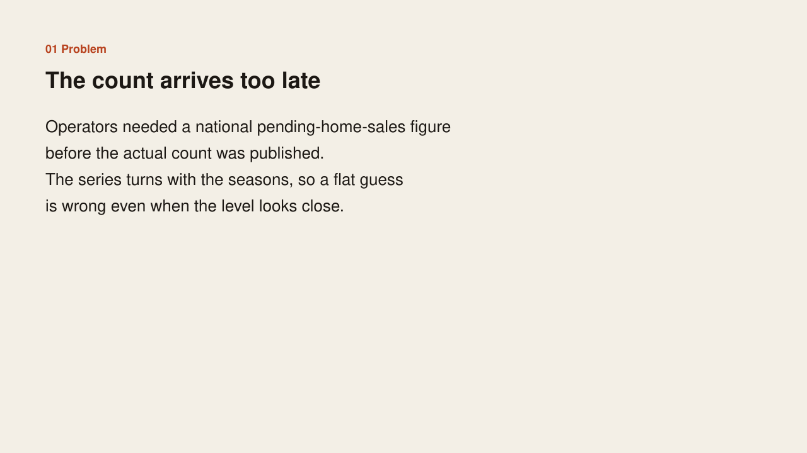
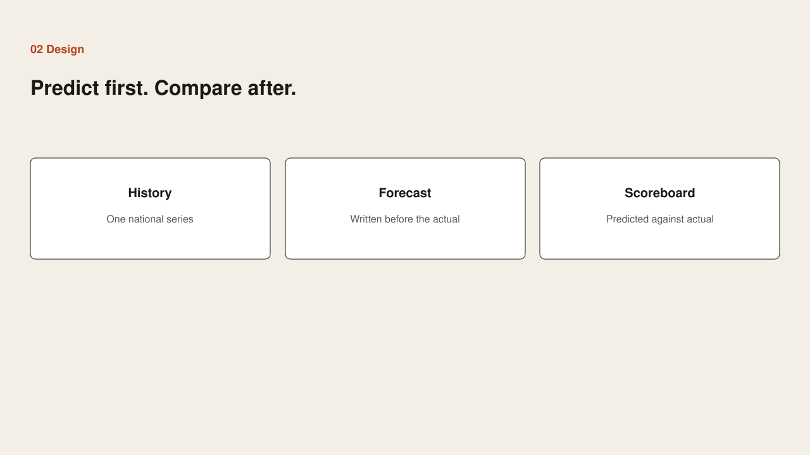
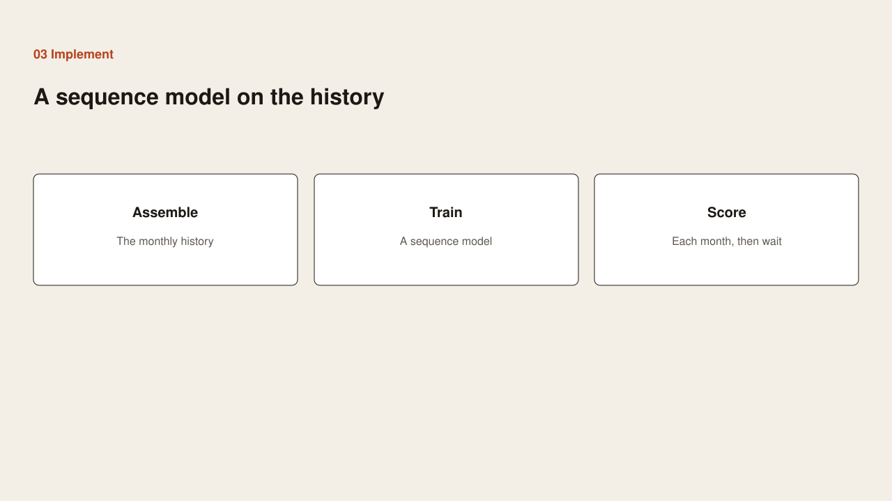
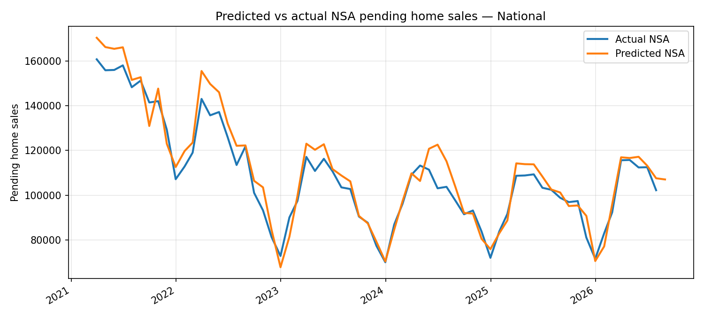

Problem
Problem

Operators needed a national pending-home-sales figure before the actual count was published. The series turns with the seasons, so a flat guess is wrong even when the level looks close.
Case study
Problem

Operators needed a national pending-home-sales figure before the actual count was published. The series turns with the seasons, so a flat guess is wrong even when the level looks close.
Design

Write the forecast first. Compare it with the actual only after the actual exists. Keep one national series, one forecast, and one scoreboard of predicted against actual.
Implementation

Assemble the monthly history. Train a sequence model on that history. Score each month, then wait for the actual and leave the comparison on the chart.
Benefit

From 2021 through 2026 the forecast follows the seasonal turns. Where the lines separate, the miss stays visible.